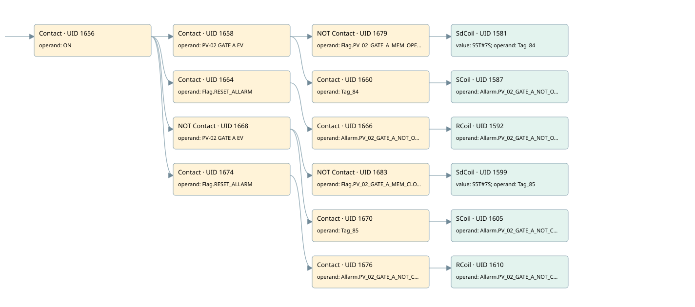

pv02
allarms 1 · 검색 색인 순서 37 · 원본 내부 NID 추정 44
백업 PLF 원본의 3068197 바이트 위치에서 복원한 XML. 검색 문서 1817의 객체 키 161022007762000000000000와 연결했다. 이름 해석 19/19개. 남은 RefId는 상수 또는 미해석 참조다.
연결 구조 다시 그리기
원본 Part/PCon/Wire를 이용한 연결도다. TIA 화면의 래더 배치 또는 실행 결과를 재현한 그림은 아니다. 핀 연결은 아래 표와 원본 XML을 기준으로 읽는다. 노드 위에 마우스를 두면 피연산자 이름을 볼 수 있다.

접점·코일·블록과 피연산자
| Part UID | Gate | Negated 핀 | 연결 피연산자 |
|---|---|---|---|
| 1656 | Contact | operand = ON | |
| 1658 | Contact | operand = PV-02 GATE A EV | |
| 1679 | Contact | operand | operand = Flag.PV_02_GATE_A_MEM_OPEN |
| 1581 | SdCoil | value = S5T#7S; operand = Tag_84 | |
| 1660 | Contact | operand = Tag_84 | |
| 1587 | SCoil | operand = Allarm.PV_02_GATE_A_NOT_OPEN | |
| 1664 | Contact | operand = Flag.RESET_ALLARM | |
| 1666 | Contact | operand = Allarm.PV_02_GATE_A_NOT_OPEN | |
| 1592 | RCoil | operand = Allarm.PV_02_GATE_A_NOT_OPEN | |
| 1668 | Contact | operand | operand = PV-02 GATE A EV |
| 1683 | Contact | operand | operand = Flag.PV_02_GATE_A_MEM_CLOSE |
| 1599 | SdCoil | value = S5T#7S; operand = Tag_85 | |
| 1670 | Contact | operand = Tag_85 | |
| 1605 | SCoil | operand = Allarm.PV_02_GATE_A_NOT_CLOSE | |
| 1674 | Contact | operand = Flag.RESET_ALLARM | |
| 1676 | Contact | operand = Allarm.PV_02_GATE_A_NOT_CLOSE | |
| 1610 | RCoil | operand = Allarm.PV_02_GATE_A_NOT_CLOSE |
접점 경로를 펼친 조건식
Contact·O/A·비교기의 원본 연결을 읽기 쉽게 펼친 보조 해석이다. POWER는 전원 레일 시작을 뜻한다. 호출 블록·에지·타이머의 내부 동작과 다중 쓰기 순서는 이 표로 실행 검증하지 않았다. 미해석 핀과 RefId는 원문 연결표에서 확인한다.
| UID | 동작 | 대상 | 원본 접점 경로 | 내용 |
|---|---|---|---|---|
| 1581 | SdCoil | Tag_84 | ((ON AND PV-02 GATE A EV) AND NOT [Flag.PV_02_GATE_A_MEM_OPEN]) | 시간 동작 SdCoil; 타이머 의미 추가 확인 / 시간 인자 S5T#7S |
| 1587 | SCoil | Allarm.PV_02_GATE_A_NOT_OPEN | ((ON AND PV-02 GATE A EV) AND Tag_84) | 조건 성립 시 Set |
| 1592 | RCoil | Allarm.PV_02_GATE_A_NOT_OPEN | ((ON AND Flag.RESET_ALLARM) AND Allarm.PV_02_GATE_A_NOT_OPEN) | 조건 성립 시 Reset |
| 1599 | SdCoil | Tag_85 | ((ON AND NOT [PV-02 GATE A EV]) AND NOT [Flag.PV_02_GATE_A_MEM_CLOSE]) | 시간 동작 SdCoil; 타이머 의미 추가 확인 / 시간 인자 S5T#7S |
| 1605 | SCoil | Allarm.PV_02_GATE_A_NOT_CLOSE | ((ON AND NOT [PV-02 GATE A EV]) AND Tag_85) | 조건 성립 시 Set |
| 1610 | RCoil | Allarm.PV_02_GATE_A_NOT_CLOSE | ((ON AND Flag.RESET_ALLARM) AND Allarm.PV_02_GATE_A_NOT_CLOSE) | 조건 성립 시 Reset |
원본 배선 연결
| Wire UID | 동일 Wire 연결 끝점 |
|---|---|
| 1678 | Powerrail {} ↔ Part 1656.in |
| 1630 | ORef 1611 (ON) ↔ Part 1656.operand |
| 1657 | Part 1656.out ↔ Part 1658.in ↔ Part 1664.in ↔ Part 1668.in ↔ Part 1674.in |
| 1631 | ORef 1612 (PV-02 GATE A EV) ↔ Part 1658.operand |
| 1659 | Part 1658.out ↔ Part 1679.in ↔ Part 1660.in |
| 1682 | ORef 1680 (Flag.PV_02_GATE_A_MEM_OPEN) ↔ Part 1679.operand |
| 21 | Part 1679.out ↔ Part 1581.in |
| 1632 | ORef 1613 (S5T#7S) ↔ Part 1581.value |
| 1633 | ORef 1614 (Tag_84) ↔ Part 1581.operand |
| 1634 | ORef 1615 (Tag_84) ↔ Part 1660.operand |
| 22 | Part 1660.out ↔ Part 1587.in |
| 1637 | ORef 1617 (Allarm.PV_02_GATE_A_NOT_OPEN) ↔ Part 1587.operand |
| 1639 | ORef 1618 (Flag.RESET_ALLARM) ↔ Part 1664.operand |
| 1665 | Part 1664.out ↔ Part 1666.in |
| 1640 | ORef 1619 (Allarm.PV_02_GATE_A_NOT_OPEN) ↔ Part 1666.operand |
| 1667 | Part 1666.out ↔ Part 1592.in |
| 1642 | ORef 1620 (Allarm.PV_02_GATE_A_NOT_OPEN) ↔ Part 1592.operand |
| 1643 | ORef 1621 (PV-02 GATE A EV) ↔ Part 1668.operand |
| 1669 | Part 1668.out ↔ Part 1683.in ↔ Part 1670.in |
| 1686 | ORef 1684 (Flag.PV_02_GATE_A_MEM_CLOSE) ↔ Part 1683.operand |
| 23 | Part 1683.out ↔ Part 1599.in |
| 1644 | ORef 1622 (S5T#7S) ↔ Part 1599.value |
| 1645 | ORef 1623 (Tag_85) ↔ Part 1599.operand |
| 1646 | ORef 1624 (Tag_85) ↔ Part 1670.operand |
| 24 | Part 1670.out ↔ Part 1605.in |
| 1649 | ORef 1626 (Allarm.PV_02_GATE_A_NOT_CLOSE) ↔ Part 1605.operand |
| 1651 | ORef 1627 (Flag.RESET_ALLARM) ↔ Part 1674.operand |
| 1675 | Part 1674.out ↔ Part 1676.in |
| 1652 | ORef 1628 (Allarm.PV_02_GATE_A_NOT_CLOSE) ↔ Part 1676.operand |
| 1677 | Part 1676.out ↔ Part 1610.in |
| 1654 | ORef 1629 (Allarm.PV_02_GATE_A_NOT_CLOSE) ↔ Part 1610.operand |
식별자 해석 근거 19개
| ORef UID | RefId | 이름 | IdentXmlPart 파일 | 해석 방법 |
|---|---|---|---|---|
| 1611 | 1 | ON | 0658-IdentXmlPart.xml | UID/RID + search-text + NID agreement |
| 1612 | 160 | PV-02 GATE A EV | 0658-IdentXmlPart.xml | UID/RID + search-text + NID agreement |
| 1680 | 162 | Flag.PV_02_GATE_A_MEM_OPEN | 0657-IdentXmlPart.xml | UID/RID + search-text + NID agreement |
| 1614 | 184 | Tag_84 | 0658-IdentXmlPart.xml | UID/RID + search-text + NID agreement |
| 1613 | 320 | S5T#7S | 0656-IdentXmlPart.xml | literal candidate: UID/RID/NID + nearby named declarations + search-text agreement |
| 1615 | 184 | Tag_84 | 0658-IdentXmlPart.xml | UID/RID + search-text + NID agreement |
| 1617 | 185 | Allarm.PV_02_GATE_A_NOT_OPEN | 0657-IdentXmlPart.xml | UID/RID + search-text + NID agreement |
| 1618 | 13 | Flag.RESET_ALLARM | 0657-IdentXmlPart.xml | UID/RID + search-text + NID agreement |
| 1619 | 185 | Allarm.PV_02_GATE_A_NOT_OPEN | 0657-IdentXmlPart.xml | UID/RID + search-text + NID agreement |
| 1620 | 185 | Allarm.PV_02_GATE_A_NOT_OPEN | 0657-IdentXmlPart.xml | UID/RID + search-text + NID agreement |
| 1621 | 160 | PV-02 GATE A EV | 0658-IdentXmlPart.xml | UID/RID + search-text + NID agreement |
| 1684 | 164 | Flag.PV_02_GATE_A_MEM_CLOSE | 0657-IdentXmlPart.xml | UID/RID + search-text + NID agreement |
| 1623 | 186 | Tag_85 | 0658-IdentXmlPart.xml | UID/RID + search-text + NID agreement |
| 1622 | 320 | S5T#7S | 0656-IdentXmlPart.xml | literal candidate: UID/RID/NID + nearby named declarations + search-text agreement |
| 1624 | 186 | Tag_85 | 0658-IdentXmlPart.xml | UID/RID + search-text + NID agreement |
| 1626 | 187 | Allarm.PV_02_GATE_A_NOT_CLOSE | 0657-IdentXmlPart.xml | UID/RID + search-text + NID agreement |
| 1627 | 13 | Flag.RESET_ALLARM | 0657-IdentXmlPart.xml | UID/RID + search-text + NID agreement |
| 1628 | 187 | Allarm.PV_02_GATE_A_NOT_CLOSE | 0657-IdentXmlPart.xml | UID/RID + search-text + NID agreement |
| 1629 | 187 | Allarm.PV_02_GATE_A_NOT_CLOSE | 0657-IdentXmlPart.xml | UID/RID + search-text + NID agreement |
검색 코드 보조 자료
참조 명칭을 찾기 위한 자료이며 실행 순서나 AND/OR 관계는 위 연결표로 확인한다.
"on" "pv-02 gate a ev" "flag".pv_02_gate_a_mem_open "tag_84" s5t#7s "flag".reset_allarm "allarm".pv_02_gate_a_not_open "allarm".pv_02_gate_a_not_open "pv-02 gate a ev" "flag".pv_02_gate_a_mem_close "tag_85" s5t#7s "tag_85" "allarm".pv_02_gate_a_not_close "flag".reset_allarm "allarm".pv_02_gate_a_not_close "allarm".pv_02_gate_a_not_close "tag_84" "allarm".pv_02_gate_a_not_open